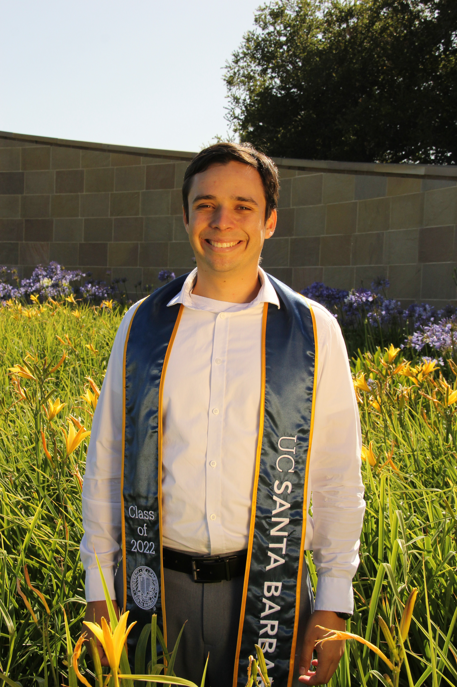

My name is Leron. I am a fifth year student in the BS/MS program at UCSB. In my free time, I enjoy:
Here is a photo of me I took when I finished my undergraduate degree.
Finally, please enjoy this table of some of my favorite Isla Vista food establishments.
| Name | Cuisine | Best Dish |
|---|---|---|
| Freebirds | Counter-serve burritos, nachos, etc. | Barbacoa Quesarito |
| Naan Stop | Wide variety of Indian dishes | Chili Chicken |
| Sam's To Go | Sandwiches | Hot Roast Beef and Pastrami |
P.S. You will find the link to the source code repo here. Thanks for visiting!